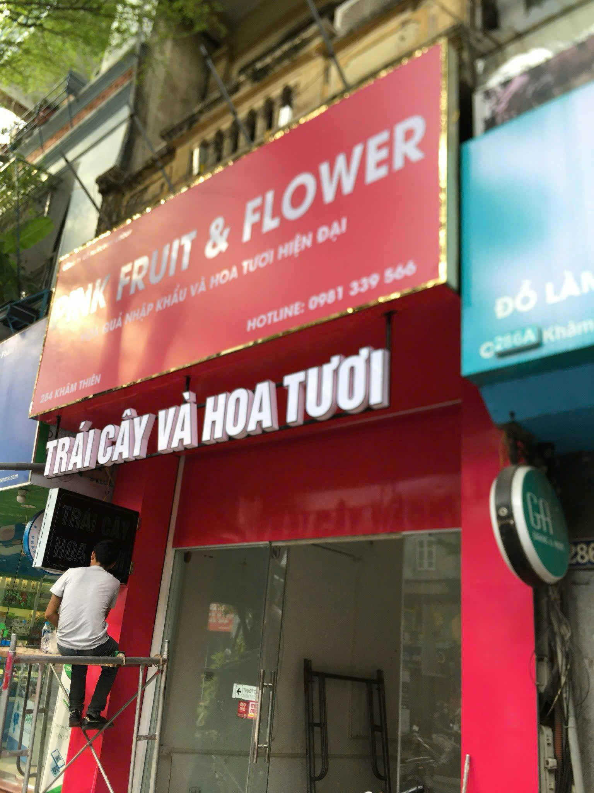

Bảng tham khảo
| Hạng mục | Giá/phương án | Ghi chú |
|---|---|---|
| In bạt Hiflex riêng | 40.000 - 90.000đ/m2 | Tùy số lượng, độ dày bạt, chất lượng in và thời gian lấy hàng. |
| Biển bạt khung sắt | 180.000 - 350.000đ/m2 | Gồm khung, căng bạt, lắp đặt cơ bản tùy mặt bằng. |
| Biển bạt lót tôn | 300.000 - 450.000đ/m2 | Bền và phẳng hơn bạt căng thường, phù hợp mặt tiền ngoài trời. |
| Biển bạt khai trương | Liên hệ theo kích thước | Phù hợp cần làm nhanh, chi phí thấp, dùng ngắn hạn hoặc thay nội dung. |
| Thay mặt bạt trên khung cũ | Liên hệ theo hiện trạng | Cần kiểm tra khung còn chắc, han gỉ và kích thước thực tế. |
Giá biển bạt theo kích thước phổ biến
| Kích thước | Diện tích | In bạt riêng | Biển hoàn thiện (khung + bạt + lắp cơ bản) |
|---|---|---|---|
| 2 × 1 m | 2 m² | 80.000 – 180.000đ | 360.000 – 700.000đ |
| 3 × 1,5 m | 4,5 m² | 180.000 – 400.000đ | 810.000 – 1.570.000đ |
| 4 × 2 m | 8 m² | 320.000 – 720.000đ | 1.440.000 – 2.800.000đ |
| 5 × 2,5 m | 12,5 m² | 500.000 – 1.100.000đ | 2.250.000 – 4.370.000đ |
| 6 × 3 m | 18 m² | 720.000 – 1.600.000đ | 3.240.000 – 6.300.000đ |
Tính bằng đơn giá tham khảo ở bảng trên, nhân với diện tích. Chưa gồm phí khảo sát, tháo dỡ biển cũ hoặc phát sinh tại mặt bằng; đơn hàng nhỏ có thể áp mức tối thiểu. Báo giá chính xác sau khi xem ảnh và kích thước thực tế.
Giá biển bạt khung sắt được tính thế nào?
Giá in bạt Hiflex riêng và giá biển hoàn thiện có khung là hai hạng mục khác nhau. Bảng trên tách riêng in bạt, biển khung sắt, biển lót tôn và thay bạt trên khung cũ để anh/chị dễ so sánh.
Các mức giá đang công khai là giá tham khảo. Báo giá cụ thể phụ thuộc kích thước, hiện trạng khung và điều kiện lắp đặt tại mặt bằng. Khi gửi yêu cầu, hãy kèm ảnh mặt tiền, kích thước ngang × cao, địa chỉ thi công và cho biết có tận dụng khung cũ không.
Ưu điểm của biển bạt Hiflex
Biển bạt Hiflex có chi phí thấp, làm nhanh, dễ thay nội dung, phù hợp cửa hàng mới mở, khai trương hoặc mặt tiền lớn.
Nhược điểm là độ sang và độ bền không bằng alu chữ nổi hoặc hộp đèn cao cấp.
Khi nào nên nâng cấp khỏi Hiflex?
Nếu biển là nhận diện chính dài hạn, vị trí mặt phố đông hoặc thương hiệu cần nhìn chuyên nghiệp, nên cân nhắc alu chữ nổi hoặc hộp đèn.
Có thể dùng Hiflex giai đoạn đầu để tiết kiệm, sau đó nâng cấp khi đã ổn định kinh doanh.
Chọn kích thước biển bạt theo bề rộng mặt tiền
Đo phần mặt tiền trống thực tế rồi chừa mỗi bên 10–20 cm để biển không chạm góc tường, mái hiên hoặc ống thoát nước. Với mặt tiền 4 m, bề ngang biển thường chọn 3,5–4 m; mặt tiền 6–8 m có thể tách thành biển chính và biển phụ.
Tỉ lệ dễ đọc từ lòng đường thường rơi vào khoảng 3:1 đến 4:1 giữa chiều ngang và chiều cao. Chiều cao dưới 0,8 m khó đọc khi khách đi xe, nên ưu tiên tên thương hiệu và ngành hàng chính thay vì đưa nhiều dòng chữ nhỏ.
Khi nào chỉ cần thay bạt, khi nào nên làm mới cả khung
Nếu khung còn chắc, chân cột không lung lay và kích thước vẫn đúng nhu cầu, thay mặt bạt thường tiết kiệm hơn làm mới toàn bộ. Cần ảnh khung hiện tại để kiểm tra mức han gỉ trước khi chốt.
Khung han gỉ nặng, chân cột yếu hoặc mặt bằng vừa đổi kích thước là lúc nên tính lại cả hệ khung, để tránh phải tháo làm lần hai.
Câu hỏi thường gặp về báo giá biển bạt
Bảng giá trên đã gồm khung và lắp đặt chưa?
Chưa. Bảng giá tách riêng in bạt Hiflex, biển bạt khung sắt, bạt lót tôn và thay mặt bạt trên khung cũ. Dòng “biển bạt khung sắt” mới là mức gồm khung, căng bạt và lắp đặt cơ bản.
Biển bạt 3 × 2 m khoảng bao nhiêu tiền?
Theo đơn giá tham khảo đang công khai, biển 3 × 2 m (6 m²) rơi vào khoảng 240.000 – 540.000đ nếu chỉ in bạt, và khoảng 1.080.000 – 2.100.000đ nếu làm trọn bộ khung, bạt và lắp đặt cơ bản. Mức thực tế thay đổi theo mặt bằng và hiện trạng khung.
Có tận dụng khung cũ để chỉ thay mặt bạt không?
Có, nếu khung còn chắc, chân cột không lung lay và kích thước đúng nhu cầu. Cần ảnh khung hiện tại để kiểm tra mức han gỉ trước khi chốt phương án.
Cần gửi những gì để nhận báo giá sát?
Ảnh mặt tiền, kích thước ngang × cao, địa chỉ lắp đặt, thời gian mong muốn và cho biết có tận dụng khung cũ hay không.
Biển bạt có phù hợp dùng lâu dài không?
Biển bạt phù hợp khi cần nhanh, tiết kiệm hoặc thay nội dung định kỳ. Nếu đây là nhận diện chính dùng nhiều năm ở mặt phố đông người, nên cân nhắc alu chữ nổi hoặc hộp đèn LED.
Còn thắc mắc khác, gọi 0989 521 881 hoặc nhắn Zalo để được xem ảnh và tư vấn trực tiếp.
Ảnh biển bạt và mặt tiền đã thi công


Nhận báo giá sát theo mặt tiền
Gửi ảnh mặt tiền, kích thước dự kiến, địa chỉ lắp đặt và mẫu thiết kế nếu có qua Zalo 0989 521 881. Xem thêm mẫu thông tin cần gửi để báo giá. Bông Sen Trắng sẽ tư vấn phương án phù hợp ngân sách trước khi chốt thi công.